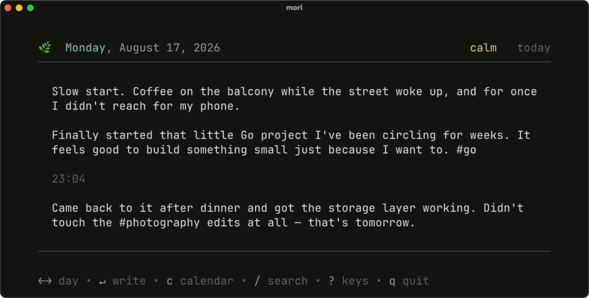
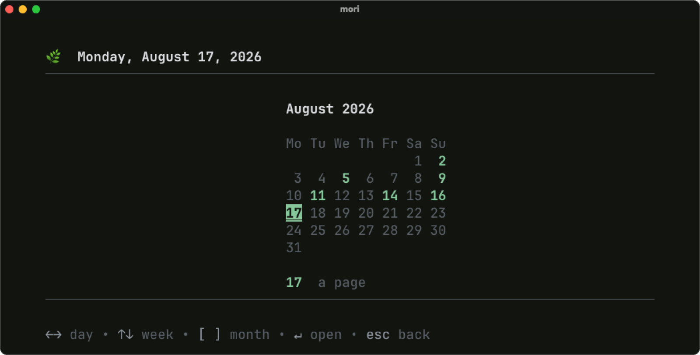
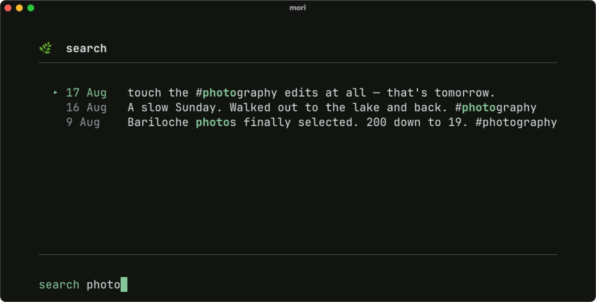
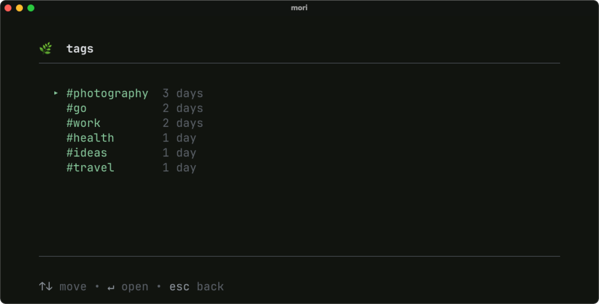
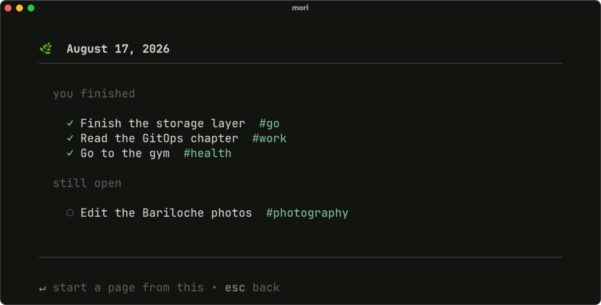
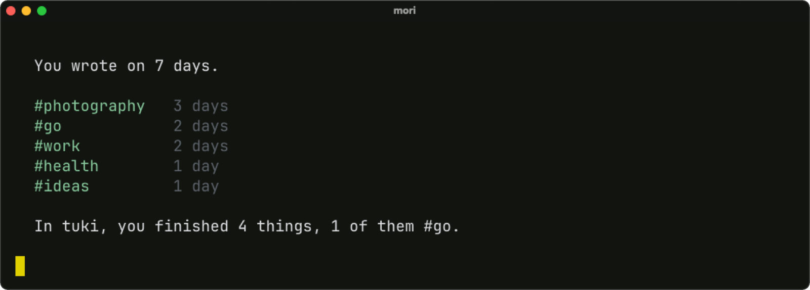

Type mori and today's page is open, cursor already in it. The timestamp appeared because the writing came back to it after dinner.

A month, and the shape of it. Days you wrote on are lit; the rest are simply quiet.

Search runs as you type, newest day first, and shows the line the words were actually on.

Tags are the hashtags in your writing. Nothing to set up, nothing to maintain — choosing one is choosing a search.

If you use tuki, press tab to see what you got done while you decide what to say about it.

A month, read back. No comparison to another month, no average, no percentage, and no adjective about whether it was enough.
A small ecosystem
mori has a sibling.
tuki
What do I need to do?
mori
What happened?
tuki provides the facts.
mori provides the reflection.
mori will never turn your task list into prose and call it your writing — that rule is the reason the two are separate tools. The bridge is optional, read-only, and silent when tuki isn't installed.
Install
However you'd normally reach for it.
The one-liner at the top of this page is the usual way: it checks the
download against the release's own sha256, installs to
~/.local/bin, and puts that on your
PATH. If you'd rather not pipe a script:
$ go install github.com/rmpato/mori@latestLands in ~/go/bin, which isn't on your
PATH by default.
$ git clone https://github.com/rmpato/mori
$ cd mori && make installGo 1.26 or newer.
Archives for macOS, Linux and Windows are on the releases page.
Afterwards
mori update keeps it current. It asks first, and
it is the only command that touches the network.
What it doesn't do
- accounts or sync
- cloud, ever
- streaks
- notifications
- mood charts
- telemetry
Nothing on this page is sent anywhere either: no fonts, no analytics, no third-party anything. It seemed like the least a page about a private journal could do.